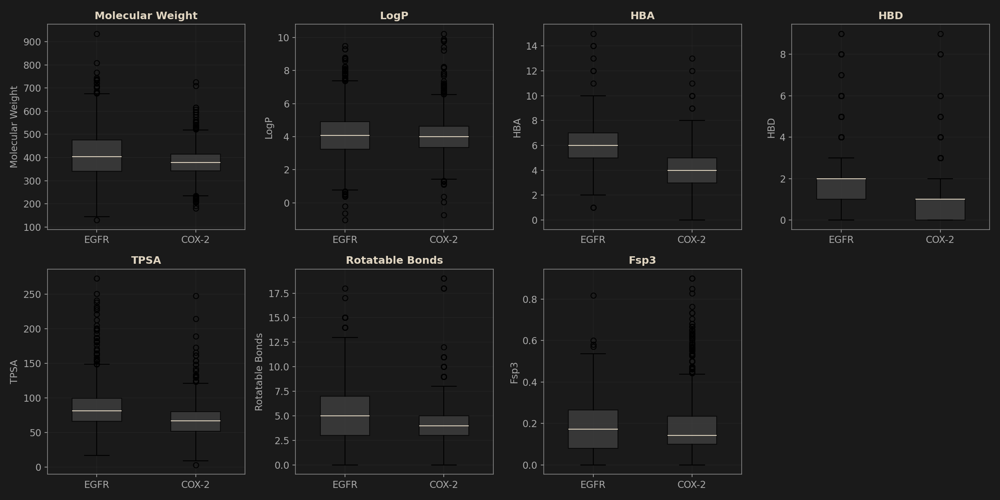
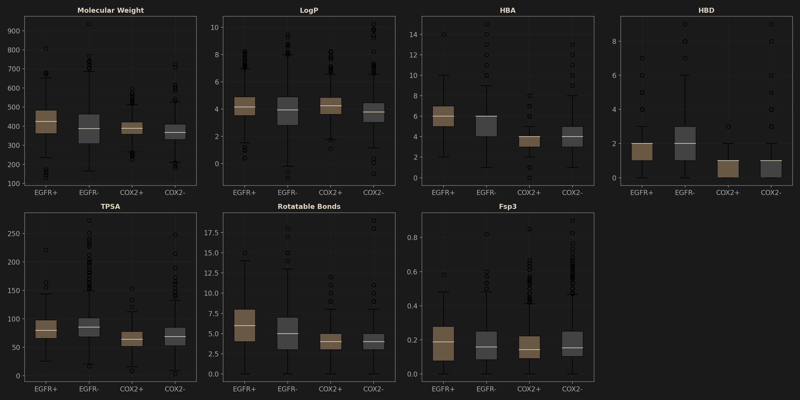

COX-2 vs EGFR Molecular Descriptor Comparison
EGFR n=2030 | COX-2 n=1720 | Mann-Whitney U test | 2026-10-10
EGFR Sample Size
2,030
51.9% active (1054:976)
COX-2 Sample Size
1,720
48.8% active (840:880)
Significant Descriptors
6 / 7
p < 0.05 (Mann-Whitney U)
Largest Effect Size
0.682
HBD (NumHDonors)
1. Overall Distribution: Box Plots
Each box shows median (line), IQR (box), whiskers (1.5x IQR), and outliers (dots). EGFR inhibitors are consistently larger and more polar than COX-2 inhibitors.

Fig 1. Box plot comparison of 7 molecular descriptors between EGFR (n=2030) and COX-2 (n=1720) inhibitor datasets.
2. By Activity: Active vs Inactive
EGFR+ = EGFR active, EGFR- = EGFR inactive, COX2+ = COX-2 active, COX2- = COX-2 inactive. Trends (active vs inactive) differ between targets for HBA, Rotatable Bonds, and Fsp3.

Fig 2. Descriptor distributions stratified by activity label (pChEMBL >= 6.5 threshold) within each target.
3. Statistical Summary
| Descriptor |
EGFR mean ± std |
COX-2 mean ± std |
Diff |
Effect size |
p-value |
Sig. |
| MolWt |
411.23 ± 103.44 |
379.02 ± 59.92 |
+32.22 |
0.194 |
<0.001 |
*** |
| MolLogP |
4.11 ± 1.39 |
4.03 ± 1.13 |
+0.08 |
0.035 |
0.064 |
ns |
| NumHAcceptors |
5.72 ± 1.62 |
3.91 ± 1.35 |
+1.81 |
0.619 |
<0.001 |
*** |
| NumHDonors |
2.07 ± 1.15 |
0.74 ± 0.87 |
+1.34 |
0.682 |
<0.001 |
*** |
| TPSA |
84.90 ± 28.07 |
67.47 ± 23.19 |
+17.43 |
0.382 |
<0.001 |
*** |
| NumRotatableBonds |
5.71 ± 2.90 |
4.08 ± 1.79 |
+1.63 |
0.342 |
<0.001 |
*** |
| FractionCSP3 |
0.18 ± 0.12 |
0.18 ± 0.14 |
-0.01 |
0.040 |
0.032 |
* |
Effect size = rank-biserial correlation (|r|). *** p<0.001, * p<0.05, ns = not significant. Mann-Whitney U two-sided test.
4. Activity Trend Comparison
Whether active molecules are higher (↑) or lower (↓) than inactive for each descriptor. This reveals which molecular properties track with bioactivity — and whether that tracking is consistent across targets.
| Descriptor |
EGFR active mean |
EGFR inactive mean |
EGFR trend |
COX-2 active mean |
COX-2 inactive mean |
COX-2 trend |
Consistent? |
| MolWt |
425.01 | 396.39 |
↑ |
390.00 | 368.53 |
↑ |
Yes |
| MolLogP |
4.25 | 3.95 |
↑ |
4.29 | 3.79 |
↑ |
Yes |
| NumHAcceptors |
5.96 | 5.47 |
↑ |
3.72 | 4.10 |
↓ |
No |
| NumHDonors |
1.94 | 2.22 |
↓ |
0.62 | 0.85 |
↓ |
Yes |
| TPSA |
81.41 | 88.65 |
↓ |
64.53 | 70.28 |
↓ |
Yes |
| NumRotatableBonds |
6.06 | 5.34 |
↑ |
4.01 | 4.15 |
↓ |
No |
| FractionCSP3 |
0.18 | 0.17 |
↑ |
0.17 | 0.20 |
↓ |
No |
5. Key Findings
HBD is the largest inter-target difference (effect size 0.682)
EGFR inhibitors average 2.07 H-bond donors vs COX-2's 0.74. This reflects a fundamental binding-mode difference: EGFR inhibitors require hinge-region H-bond donors (e.g., quinazoline NH), while COX-2 inhibitors rely primarily on hydrophobic and van der Waals contacts. Fewer donors also means better membrane permeability — consistent with COX-2 being an extracellular enzyme (no need to cross cell membrane).
HBA activity trend is reversed between targets
EGFR: active > inactive (5.96 > 5.47) — more acceptors = better hinge binding. COX-2: active < inactive (3.72 < 4.10) — fewer acceptors = less desolvation penalty in the hydrophobic COX-2 side pocket. This reversal directly mirrors the different binding pocket chemistry: EGFR's hinge is polar (needs H-bonds), COX-2's side pocket is hydrophobic (penalizes polarity).
LogP is the only non-significant inter-target difference
Both targets cluster around LogP ≈ 4.0-4.1 (p=0.064, ns). This is a shared pharmacological property: both require sufficient lipophilicity for membrane access / hydrophobic pocket engagement. LogP ~4 is a common "sweet spot" for oral bioavailability in drug-like molecules regardless of target.
EGFR inhibitors are larger and more flexible
MolWt (411 vs 379, p<0.001), Rotatable Bonds (5.7 vs 4.1, p<0.001), and TPSA (85 vs 67, p<0.001) are all significantly higher for EGFR. The ATP-binding pocket of kinases is large and elongated, requiring bigger, more flexible molecules to span from the hinge region to the DFG motif / solvent front. COX-2's active site is more compact.
Active molecules are consistently larger and more lipophilic — across both targets
MolWt (↑ in both) and LogP (↑ in both) show that "bigger and more hydrophobic = more likely active" is a universal trend in these target families, regardless of binding mechanism. This aligns with the general principle that stronger binding often requires larger contact surfaces and hydrophobic complementarity.
Rotatable Bonds and Fsp3 show opposite activity trends
EGFR: active molecules are MORE flexible (6.06 > 5.34) — need conformational adaptability for the elongated kinase pocket. COX-2: active molecules are LESS flexible (4.01 < 4.15) — rigidity reduces entropic penalty in the compact COX-2 pocket. This is a direct trade-off between binding adaptability and pre-organization, and the optimal strategy depends on pocket geometry.